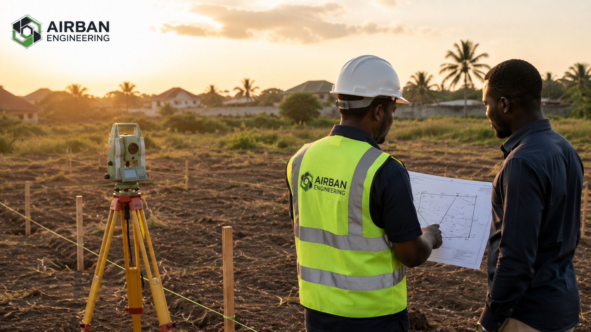

“If you buy land without a survey, you may be buying a claim — not a verified boundary.”
In Ghana, many land buyers are shown land physically by a seller, family representative, caretaker or agent. Someone points and says, “the land starts here and ends there.”
But verbal descriptions are not enough. Before paying for land, it is important to verify the actual boundaries, size, location and possible risks on the ground.
1. A Survey Confirms the Exact Boundaries
Many land sales rely on informal markers such as trees, footpaths, old pegs, walls or verbal descriptions.
These markers can be inaccurate, moved, removed or misunderstood. A professional survey helps establish the true boundary corners and checks whether the land overlaps neighbouring parcels.
- Confirms where the land actually starts and ends
- Identifies existing boundary marks or missing pegs
- Checks if the land overlaps nearby parcels
- Provides clearer boundary evidence for decision-making
2. It Helps Detect Encroachment Before Payment
A wall, building, farm, container, fence or access route may already be occupying part of the land.
If you discover this after payment, resolving it can be expensive and stressful. A survey allows you to identify these issues before committing your money.
3. It Protects You From Buying the Wrong Plot Size
A seller may describe land as 100 x 70 feet, one plot, half plot or one acre, but the actual measured size may be different.
Surveying gives you the true dimensions and area, so you do not overpay for less land than promised.
- Confirms the true land size
- Checks whether the dimensions match what was promised
- Helps prevent overpayment
- Supports proper site plan preparation
4. It Reduces the Risk of Land Disputes
Many land disputes begin because different buyers are shown overlapping portions of land or because boundaries are not clearly defined.
A survey helps you verify what exists on the ground and compare it with the documents presented by the seller.
- Helps expose boundary confusion early
- Reduces future disagreement with neighbours
- Supports clearer documentation
- Gives you more confidence before buying
5. It Supports Site Plans and Land Documentation
Accurate measurements, coordinates and parcel definition are important for cadastral plans, site plans, building permit processes and land documentation.
Poor survey information can lead to delays, corrections and extra costs.
What Should You Do Before Buying Land?
Before paying for land, take the process seriously.
- Ask for available land documents
- Visit the site physically
- Get a surveyor to verify the boundaries
- Check whether the land size matches what is being sold
- Confirm whether there are signs of encroachment or dispute
- Use the verified site information to support official searches and documentation
Buying Land? Verify Before You Pay.
Airban Engineering helps clients with boundary verification, cadastral survey support, site plan support and land verification services across Ghana.
Send us the land location and any documents you have. We’ll guide you step by step.
Request Survey VerificationNeed professional land surveying services in Ghana? Visit our land surveying page here.